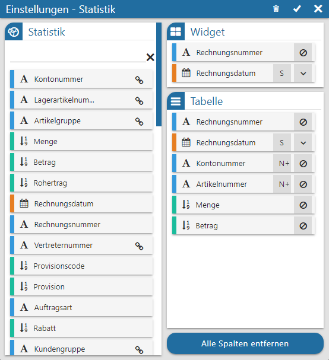
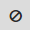
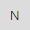
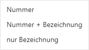
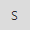
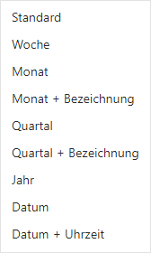

Durch Anwahl des Icons gelangt man in die Widget-Einstellungen des jeweiligen Objekts. Hier kann der Inhalt der Kachel und der Ausgaben Tabelle und "Excel" definiert werden.

Ø Tabelle "Datenfelder" (hier "Statistik")
In der linken Tabelle werden alle Felder des Objekts (z.B. der Statistik oder des Archivs) dargestellt, welche per Drag & Drop in die Tabellen "Widget" und "Tabellen" übergeben werden können. Die View 360 unterscheidet hierbei nach den folgenden Datentypen:
ü  - Alphanumerisch
- Alphanumerisch
Es handelt sich um ein
Feld mit alphanumerischen Inhalt.
ü  - Text
- Text
Es handelt sich um ein Feld mit
Langtext.
ü - Datum
Es handelt sich um ein Feld des
Typs "Datum".
ü  - Zahl (Measure)
- Zahl (Measure)
Es handelt sich um ein
Feld mit numerischen Inhalt.
Hinweis
Mit Hilfe der Suchzeile kann über eine Volltextsuche nach Datenfeldern gesucht werden, wobei das %-Zeichen als Platzhalter verwendet werden kann.
Ø Tabelle "Widget"
In dieser Tabelle werden jene Felder zugewiesen, welche in der Widget-Kachel dargestellt werden sollen (maximal 2 Felder sind möglich). Zusätzlich stehen folgende Funktionen pro Datenfeld zur Verfügung:
ü Sortierung
Durch Anwahl des
Symbols

kann die Sortierung der Kacheln pro Feld bestimmt werden, wobei die Stati " - keine Sortierung", " - absteigend" und " - aufsteigend" möglich sind.
ü Darstellungsformat -
Alphanumerisch
Bei ausgewählten Feldern kann das Darstellungsformat selber
bestimmt werden. Hierfür muss nur das Symbol

neben der Beschreibung des Felds angeklickt werden, wodurch sich die folgende Auswahl öffnet:
ü Darstellungsformat - Datum
Bei
Feldern des Typs "Datum" kann das Darstellungsformat selber bestimmt werden.
Hierfür muss nur das Symbol

neben der Beschreibung des Felds angeklickt werden, wodurch sich die folgende Auswahl öffnet:
Ø Tabelle "Tabelle"
In dieser Tabelle werden jene Felder zugewiesen, welche bei einer Ausgabe auf Tabellen oder an Excel berücksichtigt werden sollen. Hierfür stehen pro Datenfeld die gleichen Funktionen zur Verfügung, wie in der Tabelle "Widget" beschrieben.
Ø Alle Spalten entfernen
Durch Anwahl dieses Buttons wird die Tabelle "Tabelle" geleert.
Buttons

Ø Initialisierung
Durch Anwahl dieses Buttons werden die Einstellungen des Fensters auf den Standard zurückgesetzt.
Ø Speichern
Durch Anwahl des Buttons "Speichern" werden die Widget-Einstellungen gespeichert, angewendet und das Fenster geschlossen.
Ø Ende
Durch Anwahl des Buttons "Ende" wird das Einstellungsfenster geschlossen und nicht gespeicherte Änderungen verworfen.